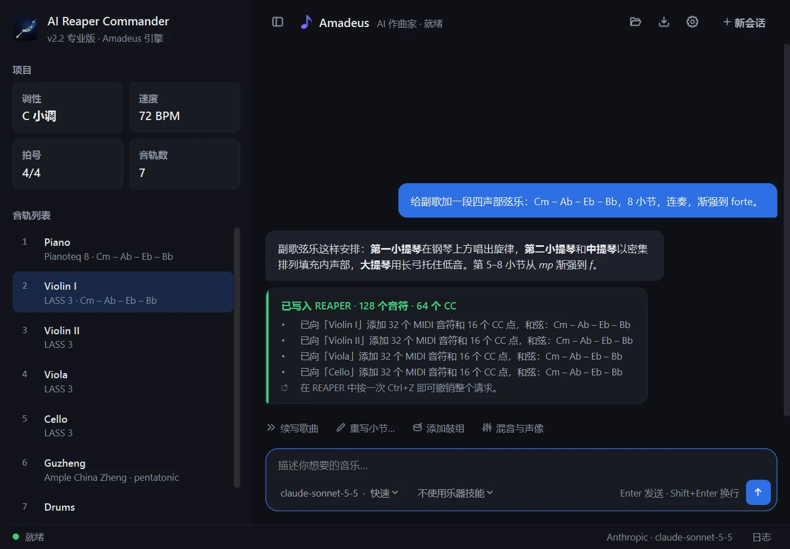

AuraLink Studio / AI Reaper Commander
对 DAW 说话，
它替你完成。
用大白话描述你想要的音乐 —— 调性、速度、乐器、和弦、情绪。助手"Amadeus"就在 REAPER 里写出来：建轨道、写音符、力度、踏板与表情曲线，设定速度并标出段落。创意的部分留给你，操作的部分交给它。

坐在 DAW 里的制作助手。
用大白话描述
像跟乐手说话一样：什么调、多快、哪些乐器、几个小节、哪里渐强。不用一个个画音符，也不用背快捷键。
制作人的耳朵
每个声部写入 REAPER 之前都会被检查：超出音域、音符重叠、力度平直、平行五度。想修改就说"重写第 5–8 小节"；每条请求只占一次 Ctrl+Z。
用你自己的 AI
Claude、Gemini、GPT、DeepSeek —— 也可接入 NVIDIA NIM、OpenRouter 等其他服务。用免费的 Gemini 密钥即可试用；整首编曲推荐 Claude Sonnet，效果最好。
乐器技能
选择与你的音源对应的技能 —— Pianoteq、LASS 3、Ample 吉他与贝斯、Studio Drummer、古筝、古琴、笛箫…… —— Amadeus 就会按该音源的演奏方式与键位切换来写。
知道自己在哪个工程里
它会读取 REAPER 中打开的工程 —— 调性、速度、音轨以及每个小节的和弦 —— 所以新声部总能贴合已有的内容。
保存与重开会话
整场工作都能保存，重新打开就回到停下的地方。界面支持中文、English、Tiếng Việt，浅色或深色。
你说目标，它去执行。
› 给副歌加一段四声部弦乐：Cm – Ab – Eb – Bb，8 小节，渐强到 forte。
⟳ 读取工程：C 小调 · 72 BPM · 7 条音轨… ✓
⟳ 写入第一、第二小提琴、中提琴、大提琴… ✓
⟳ 检查音域、声部进行、力度… ✓
完成。128 个音符已写入 REAPER —— 按一次 Ctrl+Z 即可撤销。
Windows 与 macOS。
Windows 10/11（x64）与 macOS 13 及更高版本；下载包内含 REAPER 安装程序、使用指南和示例提示词。macOS 版未经 Apple 公证：首次打开时，请在"系统设置 → 隐私与安全性"中点击"仍要打开"；Apple 芯片的 Mac 通过 Rosetta 运行。每台电脑只需激活一次。